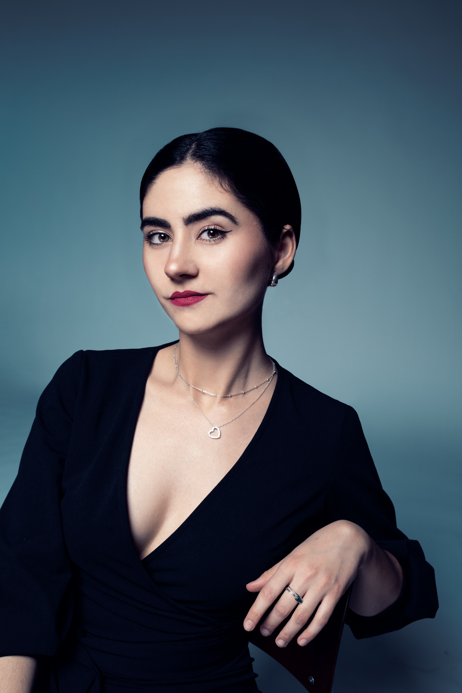

Sobre mí
Formada en el Conservatorio Profesional de Elda “Ana María Sánchez”, continuó sus estudios superiores en el Conservatorio Superior de Música “Joaquín Rodrigo” de Valencia, donde se graduó en la especialidad de Piano con honores. Su inquietud artística la llevó a ampliar su formación en Alemania y posteriormente en el Conservatorio Real de Amberes, donde obtuvo el Máster en Acompañamiento Vocal y Lied con matrícula de honor bajo la dirección de Jeanne-Minette Cilliers.
Su trayectoria profesional ha experimentado un notable crecimiento en los últimos años. Ha formado parte del Programa para Jóvenes Artistas 2023–2024 del National Opera Studio de Londres y, recientemente, ha desarrollado su labor como pianista repetidora en la English National Opera durante la temporada 2025–2026. En este contexto, ha participado en diversas producciones operísticas bajo la dirección de reconocidos maestros como Julia Jones, Marie Jacquot, Clelia Cafiero, Yi-Chen Li, Matthew Kofi Waldren y Kerem Hasan, entre otros.
Como intérprete especializada en Lied, Blanca Graciá Rodríguez ha actuado en destacados festivales internacionales como el Oxford Lieder Festival, SongEasel o el Hidalgo Festival de Múnich. Asimismo, ha sido reconocida en diversos certámenes, siendo finalista en el II Certamen Internacional de Lied y Canción (España, 2018), en el Concurso Galantes Talanti (Letonia, 2022) y en los Ashburnham English Song Awards (2025), además de obtener el tercer premio en el International Music Competition France en 2022.
Con esta designación, Elda reconoce el talento, la proyección internacional y la excelencia artística de una música local que llevará su experiencia y sensibilidad al frente del pasodoble Idella, aportando una nueva dimensión a este acto tan esperado y querido por el público.

Audiciones


02 · Próximamente
Agenda
Consulta mis próximos eventos, reuniones y espacios disponibles.
03 · Conecta
Redes Sociales
Encuéntrame también en estos espacios.
05 · Hablemos
Contacto
¿Tienes una idea, una propuesta o simplemente quieres saludar? Puedes escribirme mediante este formulario.